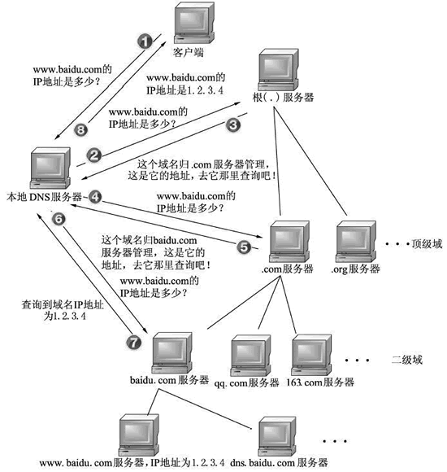

Linux_5
sudo
sudo允许系统管理员让普通用户执行一些或者全部的root命令。
sudo特性：
- sudo能够授权指定用户在指定主机上运行某些命令。如果未授权用户尝试使用 sudo，会提示联系管理员
- sudo提供了丰富的日志，详细地记录了每个用户千了什么。它能够将日志传到中心主机或者日志服务器
- sudo使用时间戳文件来执行类似的”检票”系统。当用户调用sudo并且输入它的密码时，用户获得了一张存活期为5分钟的票
- sudo的配置文件是sudoers文件，它允许系统管理员集中的管理用户的使用权限和使用的主机。它所存放的位置默认是在/etc/sudoers，属性必须为0440
配置文件：
1 | |
授权规则配置文件：
1 | |
1 | |
sudoers授权规则格式：
1 | |
范例：
1 | |
格式说明：
1 | |
语法检查工具
1 | |
授权编辑规则文件的工具:
1 | |
执行授权命令:
1 | |
时间戳文件:
1 | |
日志文件:
1 | |
PAM
PAM 配置文件格式说明
1 | |
注意：修改PAM配置文件将马上生效
建议：编辑pam规则时，保持至少打开一个root会话，以防止root身份验证错误
模块类型
- Auth 账号的认证和授权
- Account 帐户的有效性，与账号管理相关的非认证类的功能，如：用来限制/允许用户对某个服务的访问时间，限制用户的位置(例如：root用户只能从控制台登录)
- Password 用户修改密码时密码复杂度检查机制等功能
- Session 用户会话期间的控制，如：最多打开的文件数，最多的进程数等
- -type 表示因为缺失而不能加载的模块将不记录到系统日志,对于那些不总是安装在系统上的模块有用
control
- required ：一票否决，表示本模块必须返回成功才能通过认证，但是如果该模块返回失败，失败结果也不会立即通知用户，而是要等到同一type中的所有模块全部执行完毕，再将失败结果返回给应用程序，即为必要条件
- requisite ：一票否决，该模块必须返回成功才能通过认证，但是一旦该模块返回失败，将不再执行同一type内的任何模块，而是直接将控制权返回给应用程序。是一个必要条件
- sufficient ：一票通过，表明本模块返回成功则通过身份认证的要求，不必再执行同一type内的其它模块，但如果本模块返回失败可忽略，即为充分条件，优先于前面的required和requisite
- optional ：表明本模块是可选的，它的成功与否不会对身份认证起关键作用，其返回值一般被忽略
- include： 调用其他的配置文件中定义的配置信息
module-path
- 模块文件所在绝对路径：
- 模块文件所在相对路径：/lib64/security目录下的模块可使用相对路径，如：pam_shells.so、pam_limits.so
- 有些模块有自已的专有配置文件，在/etc/security/*.conf目 录下
arguments
- debug ：该模块应当用syslog( )将调试信息写入到系统日志文件中
- no_warn ：表明该模块不应把警告信息发送给应用程序
- use_first_pass ：该模块不能提示用户输入密码，只能从前一个模块得到输入密码
- try_first_pass ：该模块首先用前一个模块从用户得到密码，如果该密码验证不通过，再提示用户输入新密码
- use_mapped_pass 该模块不能提示用户输入密码，而是使用映射过的密码
- expose_account 允许该模块显示用户的帐号名等信息，一般只能在安全的环境下使用，因为泄漏用户名会对安全造成一定程度的威胁
chrony搭建私有ntp服务
1 | |
CDN原理
- 用户向浏览器输入www.a.com这个域名，浏览器第一次发现本地没有dns缓存，则向网站的DNS服务器请求
- 网站的DNS域名解析器设置了CNAME，指向了www.a.tbcdn.com请求指向了CDN网络中的智能DNS负载均衡系统
- 智能DNS负载均衡系统解析域名，把对用户响应速度最快的IP节点返回给用户
- 用户向该IP节点(CDN服务器) 发出请求
- 由于是第一次访问，CDN服务器会通过Cache内部专用DNS解析得到此域名的原web站点IP，向原站点服务器发起请求，并在CDN服务器上缓存内容
- 请求结果发给用户
搭建智能DNS，实现不同地域客户端解析到不同主机
准备：
1 | |
DNS服务器的网卡配置
1 | |
主DNS服务端配置文件实现 view
1 | |
实现区域配置文件
1 | |
创建区域数据库文件
1 | |
实现位于不同区域的三个WEB服务器
1 | |
客户端测试
1 | |
DNS解析流程
DNS 域名解析，简单地说就是把域名翻译成 IP 地址。例如：把 www.baidu.com 这个域名翻译成对应 IP 220.181.38.251，这里只是举个例子。

图中分 8 个步骤介绍了域名解析的流程，但在此之前会先检查本机的缓存配置+ hosts 解析，然后才真正执行上图的流程：
浏览器缓存检查
浏览器会首先搜索浏览器自身的 DNS 缓存，缓存时间比较短，大概只有1分钟，且只能容纳 1000 条缓存，看自身的缓存中是否有对应的条目，而且没有过期，如果有且没有过期则解析到此结束。
操作系统缓存检查 + hosts 解析
如果浏览器的缓存里没有找到对应的条目，操作系统也会有一个域名解析的过程，那么浏览器先搜索操作系统的 DNS 缓存中是否有这个域名对应的解析结果，如果找到且没有过期则停止搜索，解析到此结束。
在 Linux 中可以通过 /etc/hosts 文件来设置，可以将任何域名解析到任何能够访问的IP 地址。如果在这里指定了一个域名对应的 IP 地址，那么浏览器会首先使用这个 IP地址。当解析到这个配置文件中的某个域名时，操作系统会在缓存中缓存这个解析结果，缓存的时间同样是受这个域名的失效时间和缓存的空间大小控制的。
- 第一步
客户端通过浏览器访问域名为 www.baidu.com (http://www.baidu.com) 的网站，发起查询该域名的 IP 地址的 DNS 请求。该请求发送到了本地 DNS 服务器上。本地 DNS 服务器会首先查询它的缓存记录，如果缓存中有此条记录，就可以直接返回结果。如果没有，本地 DNS 服务器还要向 DNS 根服务器进行查询。
- 第二步
本地 DNS 服务器向根服务器发送 DNS 请求，请求域名为 www.baidu.com (http://www.baidu.com) 的 IP 地址。
- 第三步
根服务器经过查询，没有记录该域名及 IP 地址的对应关系。但是会告诉本地 DNS 服务器，可以到域名服务器上继续查询，并给出域名服务器的地址(.com 服务器)。
- 第四步
本地 DNS 服务器向 .com 服务器发送 DNS 请求，请求域名 www.baidu.com (http://www.baidu.com) 的 IP 地址。
- 第五步
com 服务器收到请求后，不会直接返回域名和 IP 地址的对应关系，而是告诉本地DNS 服务器，该域名可以在 baidu.com 域名服务器上进行解析获取 IP 地址，并告诉 baidu.com 域名服务器的地址。
- 第六步
本地 DNS 服务器向 baidu.com 域名服务器发送 DNS 请求，请求域名 www.baidu.com (http://www.baidu.com) 的 IP 地址。
- 第七步
baidu.com 服务器收到请求后，在自己的缓存表中发现了该域名和 IP 地址的对应关系，并将 IP 地址返回给本地 DNS 服务器。
- 第八步
本地 DNS 服务器将获取到与域名对应的 IP 地址返回给客户端，并且将域名和 IP 地址的对应关系保存在缓存中，以备下次别的用户查询时使用。
iptables五表五链
五表
- filter：过滤规则表，根据预定义的规则过滤符合条件的数据包（默认表）
- nat：地址转换规则表
- mangle：修改数据标记位规则表
- raw：关闭启用的连接跟踪机制，加快封包穿越防火墙速度
- security：用于强制访问控制（MAC）网络规则，由 Linux 安全模块（如 SELinux）实现
优先级顺序：
security –> raw –> mangle –> nat –> filter
五链
规则链（chain）名或者说五个钩子函数（hook functions）包括：
- INPUT链：处理输入数据包
- OUTPUT链：处理输出数据包
- FORWARD链：处理转发数据包
- PREROUTING链：用于目标地址转换（DNAT）
- POSTOUTING链：用于源地址转换（SNAT）
数据报文的流向：
- 到本机某进程的报文：PREROUTING –> INPUT
- 由本机转发的报文：PREROUTING –> FORWARD –> POSTROUTING
- 由本机的某进程发出报文（通常为响应报文）：OUTPUT –> POSTROUTING
表与链
| raw | mangle | nat | filter | security | |
|---|---|---|---|---|---|
| PREROUTING | ✓ | ✓ | ✓ | ||
| INPUT | ✓ | ✓ | |||
| FORWARD | ✓ | ✓ | |||
| OUTPUT | ✓ | ✓ | ✓ | ✓ | |
| POSTROUTING | ✓ | ✓ |
防火墙实验
iptables/firewalld/nftable 实现主机防火墙。5000-6000 端口仅 192.168.0.0/24 网段内的主机访问
Iptables
1 | |
firewalld
1 | |
mysql的发行版
常见 MySQL 发行版本：
- MySQL 官方版本：分为社区版和企业版，企业版性能略强，提供了更多的功能和工具
- Percona MySQL：基于官方社区版本二次开发，增加了一些 MySQL 官方企业版才有的功能，同时对官方社区版进行了一些优化
- MariaDB：MySQL 初创者开发，很大程度上兼容 MySQL，可以很容易的将数据从 MySQL 迁移到 MariaDB 上
mysql索引的作用
索引是对数据库表中一列或者多列的值进行排序的一种结构，就像是一本书的目录，使用索引可以快速访问数据表中的特定信息，提高数据查询效率
使用索引可以：
- 大大加快数据检索的速度
- 加速表和表之间的连接
- 将随机I/O变成顺序I/O
- 帮助引擎层避免排序和临时表
mysql btree索引的原理
B-Tree 结构的数据可以让系统高效的找到数据所在的磁盘块
B树的特征：
关键字集合分布在整颗树中；
任何一个关键字出现且只出现在一个结点中；
搜索有可能在非叶子结点结束；
其搜索性能等价于在关键字全集内做一次二分查找；
自动层次控制；
B树的搜索，从根结点开始，对结点内的关键字（有序）序列进行二分查找，如果命中则结束，否则进入查询关键字所属范围的儿子结点；重复，直到所对应的儿子指针为空，或已经是叶子结点
mysql安全加固
安装部署完 MySQL 服务后，系统提供了一个安全加固脚本 mysql_secure_installation，用以实现：
安全加固脚本
- 设置安全强度密码
- 为root用户设置密码
- 删除匿名账号
- 取消root用户远程登录
- 删除test库和对test库的访问权限
- 刷新授权表使修改生效
低版本安全加固脚本
- 为root用户设置密码
- 删除匿名账号
- 取消root用户远程登录
- 删除test库和对test库的访问权限
- 刷新授权表使修改生效
本博客所有文章除特别声明外，均采用 CC BY-SA 4.0 协议 ，转载请注明出处！